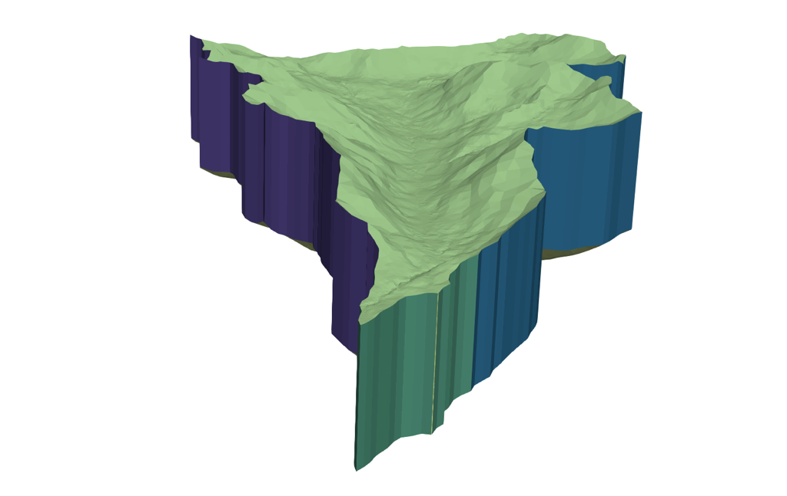

Facesets
Facesets are arbitrarily defined sections of the mesh's surface, which can be used in simulators such as ATS or Amanzi to define boundary conditions. A mesh using facesets is exported in the Exodus (PDF) format.
Naive Facesets
'Naive' facesets are a collection of only three facesets: top, bottom, and sides. They can be generated with:
sides_basic = tin.facesets.basic(has_top=True, has_bottom=True, has_sides=True)
Complex Facesets

In the above image, six distinct facesets are shown:
- Top layer
- Bottom layer
- Side (East)
- Side (West)
- Side (South)
- Outlet
Note that the outlet faceset is localized entirely to the top layer.
Faceset definitions such as these are unique to simulation parameters and goals. Consequently, they must be defined manually using one of two methods:
Side selection via Coordinates
If already you know the coordinates of the sidesets you wish to define, you can create an array defining starting/ending boundary nodes (in clockwise order). Note that the coordinate space must be the same as the DEM.
As an example, consider the following:
ss_all_layers = np.array([[3352.82,7284.46], [7936.85,4870.53], [1798.4, 256.502], [1182.73,1030.19]]) ss_top_layer = np.array([[780.41,304.79], [567.05,524.24]]) sides_all = tin.facesets.sidesets(ss_all_layers) sides_outlet = tin.facesets.sidesets(ss_all_layers,top_layer=True)
Top surface selection
Facesets can be generated using top-layer elevation discretization.
Consider the heights array:
heights = [50.,100.,150.,200.]
Five top-surface facesets will be created:
- all surface elements lower than 50 meters
- all surface elements between 50 and 100 meters
- all surface elements between 100 and 150 meters
- all surface elements between 150 and 200 meters
- all surface elements greater than 200 meters
Another approach is to split the elevation range into layers using
properties min_z and max_z:
>>> print('Elevation range = ({0},{1})'.format(dem.min_z,dem.max_z)) Elevation range = (2365.3,3942.2) >>> heights = np.linspace(dem.min_z,dem.max_z,10) >>> print(heights) array([2365.3 , 2540.51111111, 2715.72222222, 2890.93333333, 3066.14444444, 3241.35555556, 3416.56666667, 3591.77777778, 3766.98888889, 3942.2 ])
To capture the faceset, call:
faceset_top = tin.facesets.from_elevation(heights)
Writing Mesh with Facesets
To write an Exodus mesh with these facesets, call
tin.dump.to_exodus(my_dem,facesets=[sides_all, sides_outlet, sides_basic])
Any permutation of faceset objects is possible - just be aware that they may overlap if not constructed properly.